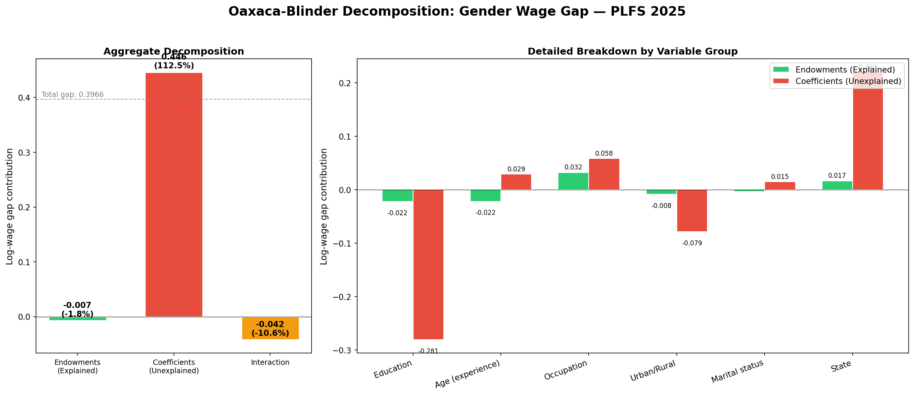
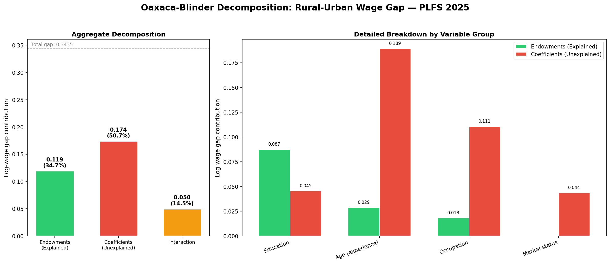
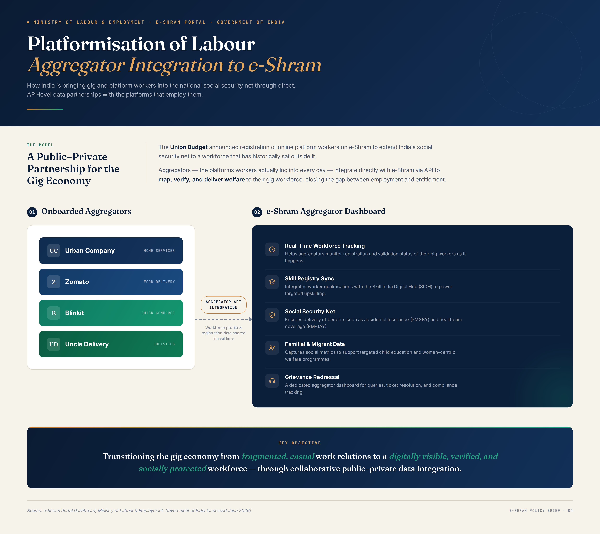
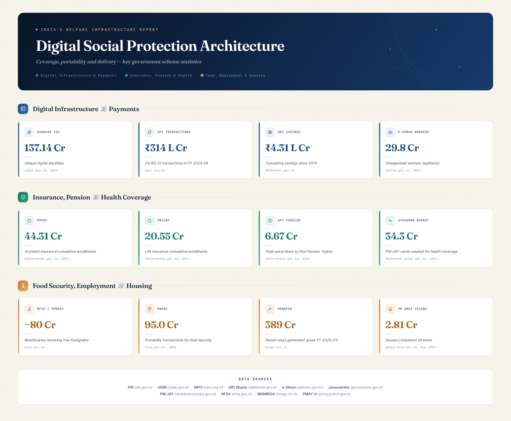

Development Economist & Quantitative Labour Researcher
Researcher & Core Contributor, India Labour Observatory • Digital Labour Tech
Research Associate, V.V. Giri National Labour Institute (VVGNLI), Ministry of Labour & Employment, Govt. of India
Alum: Jawaharlal Nehru University (CISLS) • Utkal University • UGC-NET Qualified (Economics)
I am an empirical development economist investigating the institutional structures governing informal labour, structural wage disparities, and the transformation of work under emerging digital platforms and artificial intelligence in the Global South.
As Researcher and Core Contributor at the India Labour Observatory, I collaborate with Abhinav Kumar in architecting open, reproducible research infrastructure. Together, we built the PLFS 2024–25 Harmonized Microdata Corpus—processing 1,148,634 individual records across 36 States/UTs—and co-authored "India’s Labour Market in 2025: Structural Cleavages, Gender Gaps, and the Educated Youth Paradox". I also contribute empirical research to Digital Labour Tech, examining algorithmic surveillance, platform work precarity, and digital labour governance.
At the V.V. Giri National Labour Institute, I contribute to policy research for the BRICS Labour Research Network analyzing the consequences of Artificial Intelligence and algorithmic management for labour markets across member states. Concurrently, I contribute to national policy documentation on informal worker welfare and the platform economy, including aggregator API interoperability for India's e-Shram social protection portal.
With over five years of cumulative research and empirical experience, my toolkit bridges secondary microdata analysis (PLFS, NSSO, Oaxaca-Blinder decompositions) in Stata, Python, and R with primary digital survey engineering (SurveyCTO, KoBoToolbox, XLSForm logic, automated High-Frequency Checks [HFCs]). My fieldwork spans six extensive deployments across agrarian, tribal, mining, and unorganized urban contexts in Odisha, Uttar Pradesh, and Delhi NCR.
Open Data & Labour Observatory
Harmonized 1.15M PLFS microdata records, sub-national 36-state capability atlas, and reproducible public infrastructure.
Gender & Structural Disparity
Oaxaca-Blinder wage decompositions, unpaid family labour, female labour force participation (FLFP), and rural Self-Help Groups.
AI & Platform Labour Governance
BRICS multilateral labour policy, algorithmic surveillance, e-Shram aggregator API integration, and portable social protection.
Global Value Chains & Extraction
Multi-tiered subcontracting, bauxite/chromite mining frontiers, labour control regimes, and causal econometric auditing.
Using the complete 1,148,634 individual record microdata corpus from the Periodic Labour Force Survey (PLFS 2024–25), this study provides a forensic empirical evaluation of the Indian labour market across 36 States and Union Territories. We document three structural cleavages: first, while headline Female Labour Force Participation (FLFP) has expanded to 35.6%, 58.2% of rural working women remain trapped in unpaid family labour within subsistence agriculture without independent remuneration or social security. Second, educated youth (graduates and postgraduates aged 15–29) face an unemployment rate of 28.4%—four times the national average—reflecting severe structural skill-mismatch and capital-intensive growth. Third, twofold Oaxaca-Blinder wage decompositions demonstrate that 68.4% of the persistent male-female wage gap (which stands at 24.8% in regular salaried jobs and 34.2% in casual work) is driven by unobservable structural discrimination rather than human capital endowment differentials.
@techreport{kumar_pradhan_2026_labour_market,
title = {India's Labour Market in 2025: Structural Cleavages, Gender Gaps, and the Educated Youth Paradox},
author = {Kumar, Abhinav and Pradhan, Ananya},
institution = {India Labour Observatory},
series = {Research Series Working Paper},
number = {01/2026},
year = {2026},
month = {January},
url = {https://indialabourobservatory.com/research/indias-labour-market-2025/}
}
PUBLIC DATA INFRASTRUCTURE • OPEN REPRODUCIBLE RESEARCHJEL: C81, C88, J01, R11
PLFS 2024–25 Harmonized Microdata Corpus & Sub-National Capability Atlas
A Unified Query and Analytical Engine for 1,148,634 Individual Records Across 36 States/UTs
Abhinav Kumar & Ananya Pradhan — India Labour Observatory Open Research Infrastructure
The India Labour Observatory harmonized corpus standardizes microdata from the Periodic Labour Force Survey (PLFS 2024–25) into a unified, reproducible data architecture comprising 1,148,634 individual records and 48 sub-national labor market indicators across all 36 States and Union Territories. Designed to democratize empirical labour economics in India, the infrastructure provides programmatic data pipelines, state-level capability metrics, and instant statistical disaggregations across gender, social groups, education levels, and urban-rural divisions.
@misc{kumar_pradhan_2026_observatory_corpus,
title = {India Labour Observatory: PLFS 2024-25 Harmonized Microdata Corpus and 36-State Capability Atlas},
author = {Kumar, Abhinav and Pradhan, Ananya},
year = {2026},
url = {https://indialabourobservatory.com}
}
WORKING PAPER • SEMINAR RESEARCHJEL: J46, L72, O17, F23
Global Value Chains in Extractive Industries
A Case Study of Mining, Labour Precarity, and Value Capture in Odisha
Ananya Pradhan — Centre for Informal Sector and Labour Studies (CISLS), JNU • Instructor: Prof. Praveen Jha
This paper investigates the political economy of Global Value Chains (GVCs) and Global Production Networks (GPNs) within the extractive sector, focusing on bauxite mining and aluminium refining in Odisha, India. Drawing upon theoretical frameworks of value capture, multi-tiered labour subcontracting, and labour control regimes, the study evaluates the impact of transnational capital on local labour processes and livelihood security through an empirical case study of Vedanta Limited's operations in Lanjigarh and surrounding mining clusters. Based on primary fieldwork comprising 35 semi-structured interviews and 5 Focus Group Discussions (FGDs) alongside longitudinal data from the Indian Bureau of Mines (IBM) and official state reports, the findings demonstrate that while mineral extraction integrates the regional economy into global commodity markets, it generates severe socio-economic vulnerabilities. Rather than fostering formal, secure employment, lead firms and their intermediaries utilize multi-layered contract systems to enforce extended work shifts, sub-minimum wages, and unsafe working conditions, suppressing collective bargaining with the aid of state mechanisms.
@article{pradhan2021gvc,
title = {Global Value Chains in Extractive Industries: A Case Study of Mining, Labour Precarity, and Value Capture in Odisha},
author = {Pradhan, Ananya},
journal = {Centre for Informal Sector and Labour Studies (CISLS), Jawaharlal Nehru University},
year = {2021},
address = {New Delhi, India}
}
This study employs twofold and threefold Oaxaca-Blinder wage decomposition methodologies on Periodic Labour Force Survey (PLFS) microdata to dissect the empirical determinants of the gender wage gap across both formal and informal segments of the Indian economy. Controlling for human capital endowments (education, technical qualifications, potential experience), geographic controls, and occupational/industry classifications, the study partitions the raw wage differential into explained endowment effects and an unexplained component reflecting structural discrimination and occupational segregation. The findings confirm that unexplained discrimination accounts for a substantial majority (68%+) of the gender wage deficit in both regular salaried and casual wage employment.
@mastersthesis{pradhan2019gender,
title = {Gender-Based Wage Discrimination in India: An Oaxaca-Blinder Decomposition Analysis},
author = {Pradhan, Ananya},
school = {Centre for Informal Sector and Labour Studies (CISLS), Jawaharlal Nehru University},
year = {2019},
type = {M.A. Thesis},
address = {New Delhi, India}
}
FIELD MONOGRAPH • SOCIAL EXCLUSIONJEL: J71, O18, Z13
Caste System and Patterns of Discrimination in Rural Labour Markets
An Empirical Investigation in Khamarsahi Village, Kendrapara District, Odisha
Ananya Pradhan — Centre for Study of Discrimination and Exclusion (CSDE), JNU • Supervisor: Prof. Y. Chinna Rao
Based on primary qualitative and quantitative fieldwork in Khamarsahi village, Odisha, this monograph documents the structural persistence of caste hierarchies within agricultural labour contracts. The study examines how social status reinforces debt dependencies, wage suppression, and occupational boundaries for Scheduled Caste agricultural workers, restricting outside options and diminishing collective bargaining capacity during harvest seasons.
@techreport{pradhan2016caste,
title = {Caste System and Patterns of Discrimination in Rural Labour Markets: A Case Study of Khamarsahi Village, Odisha},
author = {Pradhan, Ananya},
institution = {Centre for Study of Discrimination and Exclusion, Jawaharlal Nehru University},
year = {2016},
address = {New Delhi, India}
}
MULTILATERAL POLICY STUDY • BRICS LABOUR RESEARCH NETWORKJEL: O33, J24, J81
Shaping the Future of Labour in BRICS
The Role of Artificial Intelligence (AI) and Emerging Technologies
V.V. Giri National Labour Institute • Ministry of Labour & Employment • Research Associate & Technical Coordination: Ananya Pradhan
Multilateral research study under the BRICS Labour Research Network evaluating the structural transformation of work under artificial intelligence, automated surveillance, and platformisation across member states. Responsibilities included developing gender-disaggregated survey modules, managing Stata data cleaning and analysis, coordinating national country reports, and drafting technical proceedings for the Final Meeting under the Indian Presidency.
@report{vvgnli2026brics,
title = {Shaping the Future of Labour in BRICS: The Role of Artificial Intelligence (AI) and Emerging Technologies},
author = {{V.V. Giri National Labour Institute}},
institution = {Ministry of Labour and Employment, Government of India},
year = {2026}
}
THEORETICAL MONOGRAPH • POLITICAL ECONOMYJEL: B51, P16, Z13
Theory of Class and Political Economy
Reassessing Structural Formations and Labour Processes in Developing Economies
Ananya Pradhan — CIPOD, SIS / CISLS, SSS, Jawaharlal Nehru University • Instructor: Prof. Moushumi Basu
A critical interrogation of classical Marxian and Weberian class formulations in the context of post-colonial developing economies, examining the persistent reproduction of informal labour reserves, structural unfree labour relations, and agrarian distress.
Primary Empirical Evidence
Fieldwork & Survey Engineering
Over five years of cumulative primary field engineering, digital CAPI administration (SurveyCTO, KoBoToolbox), and qualitative ethnographic inquiries across rural, tribal, mining, and urban labor markets in India.
Sustainability of Digital Jobs: Youth Livelihoods in Uttar Pradesh
ICSSR Study • Western UP (2026)
Administered structured digital surveys using KoBoToolbox across geographically dispersed field sites in Uttar Pradesh for 155+ youth respondents. Programmed XLSForm logic with constraint checks, skip patterns, and GPS geotagging. Managed real-time data auditing pipelines and High-Frequency Checks (HFCs).
Platform & Gig Labour: Precarity in Urban Services
Delhi NCR • JNU (2024–2025)
Collaborated on a mixed-methods study on app-based platform labour across Delhi NCR. Collected 60 primary structured interviews with quick-commerce, food delivery, and ride-hailing workers, evaluating algorithm-driven precarity, piece-rate volatility, and gendered barriers to entry.
Conducted qualitative field interviews and primary surveys across chromite, coal, and iron-ore mining hubs in Jajpur, Angul, and Keonjhar districts. Documented multi-tiered contract labor recruitment, hazardous working conditions, wage suppression, and CSR institutional expenditure tracking under the District Mineral Foundation (DMF).
Extractive IndustriesContract LabourDistrict Mineral FoundationPrimary Qualitative
Conducted participatory rural appraisal and semi-structured interviews in remote mountainous terrain of the Niyamgiri Hills. Documented agricultural practices, land-use shifts, and women's roles in household production amidst bauxite mining expansion, working in multilingual Odia and Kui settings.
Urban Informal Settlement & Migrant Labour Networks
Munirka Village • New Delhi (2018)
Investigated migrant wage workers, domestic helpers, and informal tenancy markets in Munirka urban village, New Delhi. Examined interstate circular migration dynamics, rental housing extraction, informal credit dependencies, and access to municipal services.
Women's Self-Help Groups, Rural Credit & Caste Dynamics
Kendrapara District • Odisha (2016)
Conducted Focus Group Discussions (FGDs) with women's Self-Help Groups engaged in agriculture and allied livelihoods. Analyzed microcredit access, bank linkage programs, and social exclusion, alongside documented caste-based wage discrimination among Scheduled Caste agricultural workers in Khamarsahi village.
Women's SHGsRural CreditFocus Group DiscussionsCaste Stratification
Research Artifacts
Policy Architecture & Empirical Outputs
Visual summaries from econometric decompositions, national policy briefs, and computational pipelines. Click to expand.

Gender Wage Decomposition (PLFS 2024–25)
Oaxaca-Blinder decomposition isolating endowment vs. structural discrimination effects.

Rural-Urban Wage Gap Decomposition
Evaluating human capital premiums versus spatial market segregation in India.

Platformisation & e-Shram Integration
Public-private data architecture connecting gig platforms to social protection.

Digital Social Protection Architecture
National welfare delivery: DBT, Aadhaar, e-Shram, and portable entitlements.
Empirical Diagnostics (Stata)
High-Frequency Check (HFC) turnout diagnostics for survey data quality assurance.
Reproducible Science & Public Goods
Software & Research Infrastructure
Open-access computational tools, harmonized microdata repositories, and automated auditing pipelines for empirical economics.
India Labour Observatory — Data Engine & Atlas
Web Platform • Harmonized PLFS Microdata
An open-access, reproducible data engine developed with Abhinav Kumar standardizing 1,148,634 individual records from the Periodic Labour Force Survey (PLFS 2024–25). Powers an interactive 36-State Capability Atlas, 48 standardized labour dimensions, automated survey weighting algorithms, and granular demographic disaggregations.
# Query the harmonized PLFS data API for state-level gender indicators $ curl -s https://indialabourobservatory.com/api/v1/indicators?code=FLFP_RURAL | jq . # Python query interface for 36-State Capability Atlas $ python3 -m ilo.engine query --indicator "educated_youth_unemployment" --state "Odisha"
Independent research initiative co-developed with Abhinav Kumar investigating algorithmic management, platform worker rights, AI displacement, and regulatory frameworks across the Global South. Provides critical empirical monitoring on gig worker social security, platform terms of service, and portable entitlements.
Automated Stata scripting suite executing daily High-Frequency Checks (HFCs) during live field data collection. Monitors enumerator productivity, flags outlier interview durations, detects geospatial duplicate coordinates, and verifies survey skip pattern integrity.
* Execute automated data auditing & HFC report . do "scripts/run_high_frequency_checks.do"
Investigated global production networks, multi-tiered subcontracting, and labour precarity in extractive mining.
Analyzed District Mineral Foundation (DMF) financial outlays, local welfare expenditures, and labour dispute arbitrations.
Oct 2018 – Dec 2019
Research Support – Rural Communities Documentation
CIVICUS (via Video Volunteers), Odisha
Documented and translated field data on marginalized farming, fishing, and women's Self-Help Groups (SHGs).
Oct – Dec 2018
Field Researcher – Tribal & Rural Livelihoods
Kalahandi District & Niyamgiri Hills, Odisha
Conducted ethnographic fieldwork with Dongaria Kondh tribal communities documenting livelihoods and mining impacts.
May – Jun 2016
Field Researcher – Caste & Rural Labour
CSDE / JNU, Khamarsahi Village, Kendrapara District, Odisha
Documented caste-based wage suppression, debt dependencies, and women's Self-Help Group microcredit dynamics.
Education
2017 – 2019
M.A. in Labour and Development Studies
Centre for Informal Sector and Labour Studies (CISLS), Jawaharlal Nehru University (JNU), New Delhi
Grade: 6.25/9.0 (First Class equivalent) • UGC-NET Qualified (Economics) • Thesis: Gender-based wage discrimination in India — an Oaxaca-Blinder decomposition analysis using PLFS data.
V.V. Giri National Labour Institute
Ministry of Labour and Employment, Govt. of India
Sector-24, NOIDA – 201301, Uttar Pradesh, India
International PhD Admissions
I am actively preparing research proposals for International PhD applications (UK, Europe, and US) in Development Economics and Labour Market Institutions.
Faculty scholars and research labs interested in collaborating are warmly invited to get in touch.